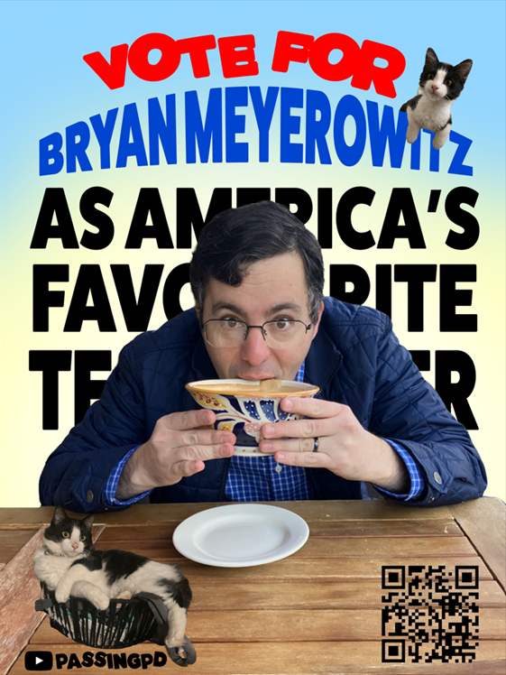

YouTube
Passing Period
The YouTube sensation thats taking over the nation! Watch Mr. Meyerowitz tackle challenging questions across the humanities!
Visit @passingpd Submit a Passing Period Question Follow Campaign InstagramCampaign HQ
Scroll down to check out the campaign’s media and see why Mr. Meyerowitz is on his way to becoming America’s Favorite Teacher.

How Voting Works
Everyone who wants to support Mr. Meyerowitz can vote for free once every 24 hours with a Facebook account through bit.ly/vote-for-meyo. It only takes a few seconds, but those daily votes really add up and can make a huge difference over time.
If you want to go even further, donations to the America's Favorite Teacher organization also count toward the campaign, with one vote added per dollar donated. That means every contribution not only supports an incredible educator but also helps fund a broader initiative that recognizes and uplifts teachers across the country.
Whether you choose to vote daily, donate, or both, every bit of support matters. Share the link with friends, family, and classmates, remind people to come back each day, and help spread the word. Let's show how much Mr. Meyerowitz means to our community and help him get the recognition he truly deserves.
YouTube
The YouTube sensation thats taking over the nation! Watch Mr. Meyerowitz tackle challenging questions across the humanities!
Visit @passingpd Submit a Passing Period Question Follow Campaign InstagramPress
Learn about the viral sensation that is Mr. Meyerowitz!
Watch the ClipShare Kit
Who is Mr. Meyerowitz?